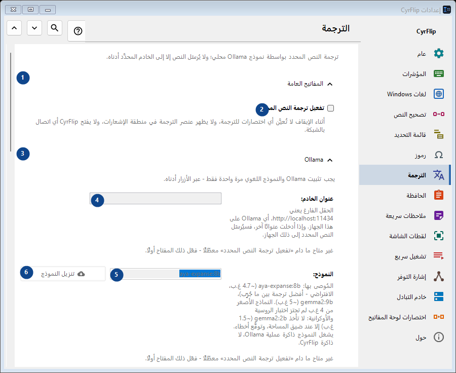
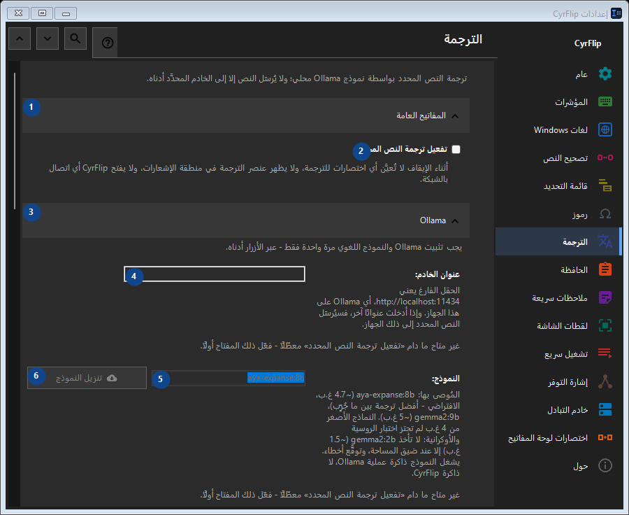

الترجمة
الغرض
ترجمة النص المحدد بواسطة نموذج Ollama محلي؛ ولا يُرسَل النص إلا إلى الخادم المحدَّد أدناه.


ترتيب الاستخدام
تُطبق الإعدادات فورًا. لا يوجد ترتيب إلزامي؛ استخدم المجموعات أدناه.
العناصر
1. المفاتيح العامة
استخدم هذا الأمر لتنفيذ الإجراء المذكور. اقرأ أي طلب تأكيد قبل الموافقة.
اختصاراتك2. تفعيل ترجمة النص المحدد
أثناء الإيقاف لا تُعيَّن أي اختصارات للترجمة، ولا يظهر عنصر الترجمة في منطقة الإشعارات، ولا يفتح CyrFlip أي اتصال بالشبكة.
اختصاراتك3. Ollama
استخدم هذا الأمر لتنفيذ الإجراء المذكور. اقرأ أي طلب تأكيد قبل الموافقة.
اختصاراتك4. عنوان الخادم
غير متاح ما دام «تفعيل ترجمة النص المحدد» معطّلًا - فعّل ذلك المفتاح أولًا. هذا العنصر غير متاح حاليًا. فعّل الميزة أو اختر إدخالًا أولًا.
اختصاراتك5. النموذج
غير متاح ما دام «تفعيل ترجمة النص المحدد» معطّلًا - فعّل ذلك المفتاح أولًا. هذا العنصر غير متاح حاليًا. فعّل الميزة أو اختر إدخالًا أولًا.
اختصاراتك6. تنزيل النموذج - النموذج
غير متاح ما دام «تفعيل ترجمة النص المحدد» معطّلًا - فعّل ذلك المفتاح أولًا. هذا العنصر غير متاح حاليًا. فعّل الميزة أو اختر إدخالًا أولًا.
اختصاراتك7. تثبيت Ollama
غير متاح ما دام «تفعيل ترجمة النص المحدد» معطّلًا - فعّل ذلك المفتاح أولًا. هذا العنصر غير متاح حاليًا. فعّل الميزة أو اختر إدخالًا أولًا.
اختصاراتك8. تشغيل Ollama
غير متاح ما دام «تفعيل ترجمة النص المحدد» معطّلًا - فعّل ذلك المفتاح أولًا. هذا العنصر غير متاح حاليًا. فعّل الميزة أو اختر إدخالًا أولًا.
اختصاراتك9. اختبار الاتصال
غير متاح ما دام «تفعيل ترجمة النص المحدد» معطّلًا - فعّل ذلك المفتاح أولًا. هذا العنصر غير متاح حاليًا. فعّل الميزة أو اختر إدخالًا أولًا.
اختصاراتك10. إلغاء
استخدم هذا الأمر لتنفيذ الإجراء المذكور. اقرأ أي طلب تأكيد قبل الموافقة. هذا العنصر غير متاح حاليًا. فعّل الميزة أو اختر إدخالًا أولًا.
اختصاراتك11. تشغيل Ollama تلقائيًا عند الترجمة
غير متاح ما دام «تفعيل ترجمة النص المحدد» معطّلًا - فعّل ذلك المفتاح أولًا. هذا العنصر غير متاح حاليًا. فعّل الميزة أو اختر إدخالًا أولًا.
اختصاراتك12. إبقاء النموذج في الذاكرة (د)
غير متاح ما دام «تفعيل ترجمة النص المحدد» معطّلًا - فعّل ذلك المفتاح أولًا. هذا العنصر غير متاح حاليًا. فعّل الميزة أو اختر إدخالًا أولًا.
اختصاراتك13. يجب تثبيت Ollama والنموذج اللغوي مرة واحدة فقط - عبر الأزرار أدناه.
اختر أو أدخل القيمة الموضحة بجانب الحقل. راجعها قبل المتابعة. هذا العنصر غير متاح حاليًا. فعّل الميزة أو اختر إدخالًا أولًا.
اختصاراتك14. أقصى انتظار لتحميل النموذج (ثانية)
غير متاح ما دام «تفعيل ترجمة النص المحدد» معطّلًا - فعّل ذلك المفتاح أولًا. هذا العنصر غير متاح حاليًا. فعّل الميزة أو اختر إدخالًا أولًا.
اختصاراتك15. يجب تثبيت Ollama والنموذج اللغوي مرة واحدة فقط - عبر الأزرار أدناه.
اختر أو أدخل القيمة الموضحة بجانب الحقل. راجعها قبل المتابعة. هذا العنصر غير متاح حاليًا. فعّل الميزة أو اختر إدخالًا أولًا.
اختصاراتك16. اتجاهات الترجمة
استخدم هذا الأمر لتنفيذ الإجراء المذكور. اقرأ أي طلب تأكيد قبل الموافقة.
اختصاراتك17. إضافة اتجاه...
غير متاح ما دام «تفعيل ترجمة النص المحدد» معطّلًا - فعّل ذلك المفتاح أولًا. هذا العنصر غير متاح حاليًا. فعّل الميزة أو اختر إدخالًا أولًا.
اختصاراتك18. النتيجة
استخدم هذا الأمر لتنفيذ الإجراء المذكور. اقرأ أي طلب تأكيد قبل الموافقة.
اختصاراتك19. وضع الترجمة في الحافظة
غير متاح ما دام «تفعيل ترجمة النص المحدد» معطّلًا - فعّل ذلك المفتاح أولًا. هذا العنصر غير متاح حاليًا. فعّل الميزة أو اختر إدخالًا أولًا.
اختصاراتك20. لصق الترجمة فورًا بدلًا من النص المحدد
غير متاح ما دام «تفعيل ترجمة النص المحدد» معطّلًا - فعّل ذلك المفتاح أولًا. هذا العنصر غير متاح حاليًا. فعّل الميزة أو اختر إدخالًا أولًا.
اختصاراتك21. عرض النص الأصلي بجانب الترجمة
غير متاح ما دام «تفعيل ترجمة النص المحدد» معطّلًا - فعّل ذلك المفتاح أولًا. هذا العنصر غير متاح حاليًا. فعّل الميزة أو اختر إدخالًا أولًا.
اختصاراتك22. إغلاق النافذة بعد (ث)
غير متاح ما دام «تفعيل ترجمة النص المحدد» معطّلًا - فعّل ذلك المفتاح أولًا. هذا العنصر غير متاح حاليًا. فعّل الميزة أو اختر إدخالًا أولًا.
اختصاراتك23. غير متاح ما دام «تفعيل ترجمة النص المحدد» معطّلًا - فعّل ذلك المفتاح أولًا.
اختر أو أدخل القيمة الموضحة بجانب الحقل. راجعها قبل المتابعة. هذا العنصر غير متاح حاليًا. فعّل الميزة أو اختر إدخالًا أولًا.
اختصاراتك